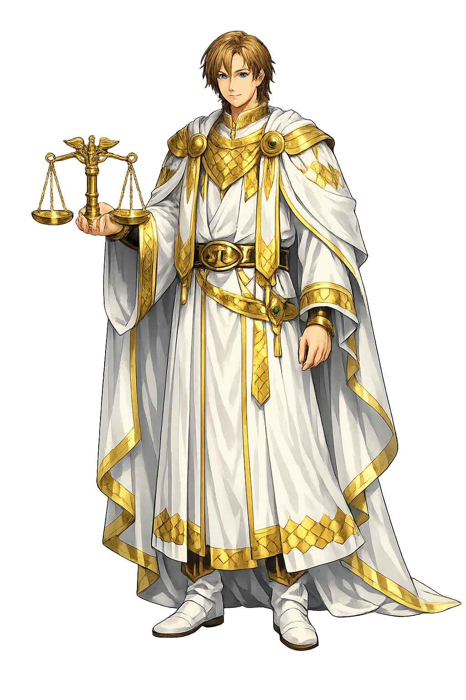
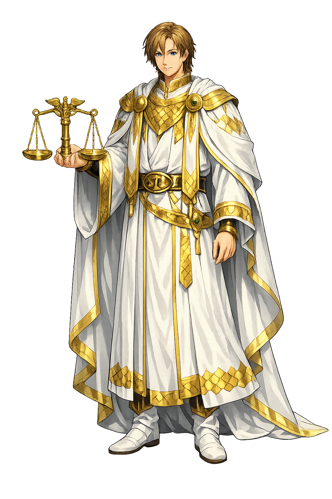

Unicode restoration and ASCII comparison
ᚠᚢᚱᛋᛁᛏᛁ
The name in its original Norse form. Forseti (ᚠᚢᚱᛋᛁᛏᛁ) is attested in the source tradition — “President, chairman”. Its original diacritics and script distinctions carry the full phonetic and orthographic weight of the source tradition.
forseti
The plain forseti form is identical to the Unicode restoration. Because this name is already written in Latin letters, no diacritics, stress, or script information were lost — only capitalization differs.
Forseti
The Unicode restoration does not need to recover lost marks for Forseti. Its value is canonical spelling and consistent cataloguing, not the reconstruction of erased orthography. The domain is readable as-is to both DNS and humanity.
Forseti.com → forseti.com
The non-ASCII characters in Forseti are encoded while the ASCII remains visible. To the DNS, it is Punycode. To humanity, it is Forseti.
How Forseti travels from ancient script to the modern URL
Owned, ideal, and ASCII forms of Forseti
Forseti
Restores ᚠᚢᚱᛋᛁᛏᛁ. The full Unicode restoration. forseti.com is not in the PuniCodex collection — it is watched for release; if it drops, this temple upgrades to an owned flagship.
How Forseti was spoken
The Hall of Glitnir and the Settler of All Suits
Forseti is the son of Baldr and Nanna, and the quietest great office in the northern pantheon: he owns Glitnir, the hall of gold pillars and silver roof, and every quarrel that comes before him ends in peace — Snorri says all who bring their lawsuits to him go away reconciled, and Grímnismál says he dwells there day after day and puts all suits to sleep.
'The shining one': Forseti's hall, propped with gold and roofed with silver — the tenth dwelling in Grímnismál's tally of the homes of the gods.
The best court of judgment among gods and men — Snorri's verdict on the seat from which every party departs reconciled.
The holy well on Heligoland whose water was drawn only in silence — the Frisian cult of Fosite that Alcuin records around 796.
Forseti, 'he who sits before': the god's name is an office, and the office outlived the god — it is Iceland's word for its president.
Stories of Forseti
Forseti has the thinnest dossier of any god in the Edda with a hall to his name: one stanza in the Poetic Edda, two sentences in the Prose, and not a single adventure. What those lines build is nonetheless complete — a god whose whole mythology is the thing he does to quarrels.
Grímnismál counts the dwellings of the gods, and the tenth is his: 'Glitnir is the tenth; it is propped with gold and thatched with silver too, and there Forseti dwells most days and puts all suits to sleep.' The verb is the miracle — svæfir, he lulls: not wins, not crushes, but puts to sleep, the way one settles a restless child. The poem gives him no weapon, no journey, no adversary — only a shining hall and the daily practice of ending strife.
Snorri builds the same hall twice. In the survey of the heavenly places, Glitnir stands with walls, pillars, and posts of red gold and a roof of silver. In the catalogue of the Æsir he names its owner: the son of Baldr and Nanna, daughter of Nep, is called Forseti; he owns that hall in heaven which is called Glitnir, and all who come to him with lawsuits go away reconciled — 'that is the best court of judgment among gods and men, as it is said here' — and Snorri quotes the Grímnismál stanza as his proof. The Prose Edda's whole account of the god is one sentence, and the sentence is enough: the child of the slain best of gods sits in the shining hall, and no quarrel survives him.
The god's name is older on parchment than the Eddas by four centuries. Around 796, Alcuin tells in his Life of Willibrord how the missionary was driven ashore on a Frisian island 'called Fosetesland after the god Fosite, whom those peoples worship' — Heligoland, the holy land. The island held a sacred spring whose water might be drawn only in silence, and the cattle that grazed there were untouchable. Willibrord baptized three men in the spring and had some of the cattle slaughtered for food; the islanders watched for the trespassers to be struck mad or dead, and when nothing happened they dragged the company before King Radbod, who cast lots daily for three days. The lot never fell on Willibrord; one of his companions was chosen and died for the sacrilege. Whether Frisian Fosite and Norse Forseti are one god remains the standing scholarly question — but the island, the silence, and the sanctity are recorded history of the cult.
Late medieval Frisian legal texts preserve a foundation legend that Jacob Grimm could not keep away from Fosite. The Frisians, wanting law of their own, were set adrift in a boat; they prayed, and a thirteenth man appeared among the twelve law-speakers, steered them to land, threw a golden axe ashore — and where it struck, a spring burst forth — and there taught them the law. The golden axe, the spring, and the divine lawgiver made the identification irresistible to nineteenth-century scholarship; modern readers generally take the thirteenth for Christ, the usual stranger of medieval legend. The story is kept here for what it genuinely is: proof that the Frisian-speaking world remembered law as a gift that came over the water to found a thing-site by a spring.
Where narrative fails, the catalogues keep him. The þulur — the mnemonic name-lists of the skaldic tradition — count Forseti in the roll of the Æsir, and Snorri's two Glitnir notices carry the hall independently of its owner. No saga stages him, no skald builds a kenning on him, and yet the name never drops out of the lists. The tradition treats him the way law treats a good judge: no stories, only the record that the court was held.
Forseti is the patron of the outcome the sagas almost never reach: the quarrel that ends. The heroic literature of the North is a literature of feud — insult answered by wound, wound by killing, killing by lawsuit, lawsuit by ambush — and into that world the Edda sets one shining hall where the arithmetic stops. All who come with their cases go away reconciled: it is the only perfect record in the corpus, and it belongs to the son of the god whose own judgments could not stand. The tradition seems to know what it was asking. Reconciliation is not the absence of justice but its completion — the verdict both parties can live inside — and the god who delivers it is given nothing else: no weapon, no journey, no death, no prophecy. His silence is the teaching. In a mythology that counts its heroes by what they break, Forseti counts by what he puts to sleep.
Enter Extended Lore